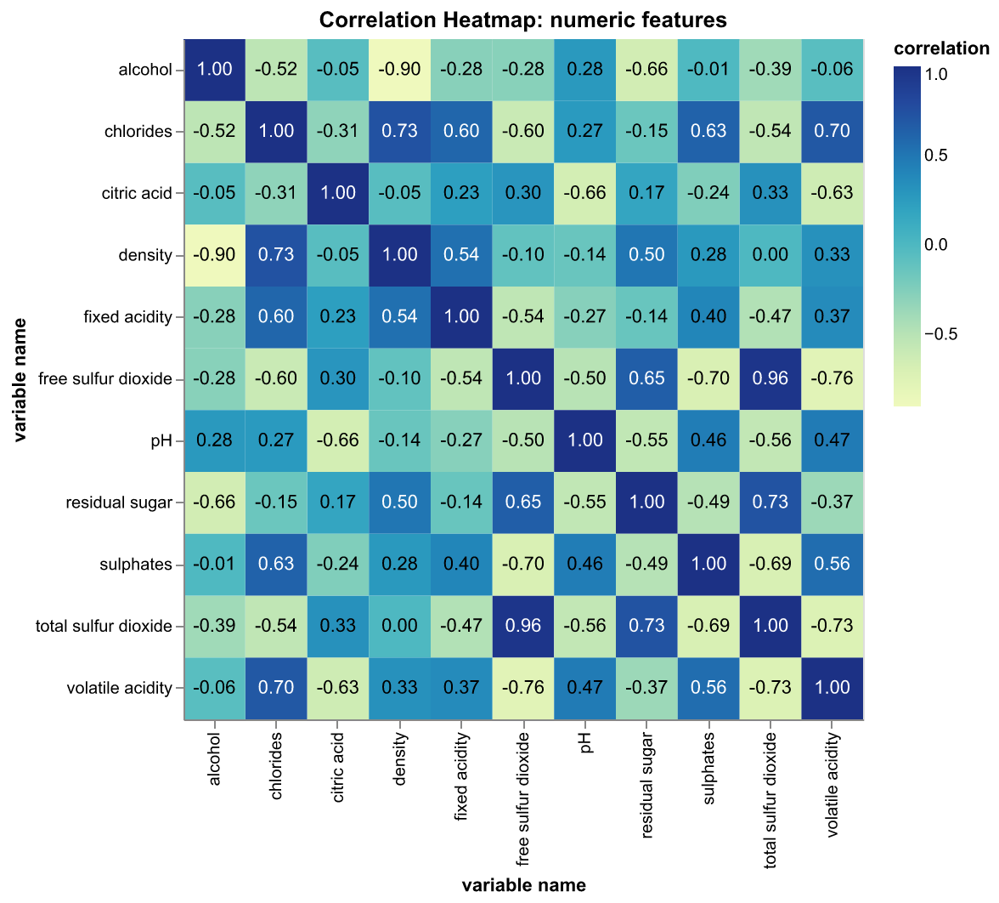

A Practical Exploration of the Wine Quality Dataset#
By Jordan Cairns, Chris Gao, Yingzi Jin & Chun Li 2023-12-03
import numpy as np
import pandas as pd
from myst_nb import glue
lr_feature_importance_df = pd.read_csv(
"../results/tables/logistic_regression_feature_importance.csv")
glue("lr_feature_importance_df", lr_feature_importance_df, display=False)
lr_test_score_df = pd.read_csv(
"../results/tables/logistic_regression_test_score.csv")
score_value = lr_test_score_df.loc[0, 'test_score']
rounded_score = round(score_value, 4)
final_score = rounded_score
glue("final_test_score", final_score,display=False)
model_cv_results_df = pd.read_csv("../results/tables/model_cv_results.csv")
model_cv_results_df.drop(model_cv_results_df.columns[[1, 2]], axis=1, inplace=True)
glue("model_cv_results_df", model_cv_results_df, display=False)
Executive Summary#
Our analysis aimed to develop a predictive model to distinguish between red and white wines based on various physicochemical properties. [] This study employed logistic regression, a model renowned for its balance between predictive power and interpretability.
The regression result suggested that residual sugar and total sulfur dioxide had high positive coefficients, indicating a strong association with white wine, whereas density showed the most substantial negative impact, followed by alcohol and volatile acidity, suggesting these are key indicators of red wine.
The logistic regression model not only achieved high accuracy but also provided valuable insights into the features most indicative of wine type. This model can assist vintners in quality control and classification tasks. Moreover, the interpretability of the model offers a foundation for further research into wine composition and its impact on sensory attributes. Future studies might explore more complex models or delve deeper into feature engineering to enhance predictive accuracy and understanding.
{bibliography}
Introduction#
In the intricate world of oenology, the distinction between red and white wines extends beyond color, embedding itself in the nuanced spectrum of their physicochemical properties. This project embarks on a data-driven journey to unravel these complexities by leveraging statistical models to classify wines as red or white based on their inherent characteristics. Utilizing a rich dataset that encapsulates key attributes like acidity, sugar content, sulfur dioxide levels, alcohol concentration, and more, we aim to build a predictive model that not only accurately classifies the wines but also sheds light on the influential factors that underpin this classification. Through this analysis, we intend to blend the art of winemaking with the precision of data science, offering insights that could prove valuable to vintners, sommeliers, and wine enthusiasts alike in understanding the subtle distinctions between these two celebrated categories of wine.
Data#
The dataset utilized in our project is sourced from the UCI Machine Learning Repository, specifically focusing on red and white variants of Portuguese “Vinho Verde” wine. This dataset is distinguished by its emphasis on physicochemical tests to model wine quality, capturing a range of variables that reflect the sensory and chemical composition of the wine samples. Notably, it encompasses various input features like acidity, sugar content, and alcohol levels, while the output variable relates to the sensory-driven quality rating of the wines. A unique aspect of this dataset is its exclusion of data on grape types, wine brands, or prices due to privacy and logistic constraints. This attribute frames our analysis within a context of physicochemical and sensory data, offering an opportunity to delve into wine quality assessment based on measurable attributes, free from commercial biases. The dataset’s structure lends itself to both classification and regression tasks, providing a fertile ground for exploring machine learning applications in the domain of wine quality evaluation.
Exploratory Data Analysis#
The first step of EDA is to generate some histograms to visualize the effects of all numerical variables to the type of wines. By comparing these distributions side by side, we can pinpoint which features exhibit significant variations across the two categories, thereby informing feature selection for predictive modeling. Such visual tools are invaluable as they facilitate an intuitive understanding of complex data relationships, highlight potential factors that could influence the wine’s classification, and guide subsequent analytical steps in the data science workflow.
Visually, some features do show significant differences between red and white wines and may be particularly relevant in distinguishing between the two. In particular, the following five features stand out in the histograms and could be considered significant for predicting the color of the wine.
Fixed & Volatile Acidity: There’s a noticeable difference in the distributions, with red wines generally exhibiting higher fixed and volatile acidity.
Residual Sugar: White wines display a much higher residual sugar content, which could be a strong differentiator
Total Sulfur Dioxide: The levels are significantly higher in white wines, suggesting this feature could be key in classification.
Free Sulfur Dioxide: Similar to total sulfur dioxide, this feature is also markedly higher in white wines.
pH value: The majority of red wines seem to have a higher overall pH values.

The distribution of the plot also demonstrates the majority of the explainatory variables are not strongly corrlated. However, we do observe the correlations between variable pairs free sulfur dioxide and total sulfur dioxide, as well as density and alcohol are relatively high (absolute value exceeding 0.7). This might introduce difficulties to the model to estimate the relationship between each independent variable and the dependent variable independently
Models and Results#
| model | test_score | train_score | |
|---|---|---|---|
| 0 | dummy | 0.753904 | 0.753904 |
| 1 | dtree | 0.979986 | 0.999835 |
| 2 | knn | 0.992743 | 0.994392 |
| 3 | svm | 0.996481 | 0.997251 |
| 4 | nb | 0.975587 | 0.976193 |
| 5 | lr | 0.995821 | 0.995876 |
Upon concluding our exploratory data analysis and delving into model evaluation, the results delineate an intriguing landscape of model performance. Notably, while the Decision Tree, KNN, and RBF SVM models exhibit high accuracy, with the SVM model achieving the highest test scores, the choice of model cannot rest on accuracy alone. Logistic Regression, while marginally surpassed by SVM in test score metrics, stands out for its interpretability. This model provides not only a robust predictive performance but also the capacity to glean meaningful insights from the significance and impact of each feature, as reflected by its coefficients. In light of this, we opt for Logistic Regression, valuing the interpretative clarity it offers, which is instrumental for a nuanced understanding of the variables influencing wine classification. This strategic choice harmonizes predictive strength with explanatory depth, guiding us towards actionable intelligence over mere predictive prowess. The final accuracy score for our logistic regression model was 0.9918
To further explore the relationship between the two wines, we examined the coeffecients fit to our logistic regression model. This showed the marginal contribution of each feature to our model.
| Feature Name | Coefficient | |
|---|---|---|
| 0 | fixed acidity | 0.061478 |
| 1 | volatile acidity | -1.325504 |
| 2 | citric acid | 0.245435 |
| 3 | residual sugar | 3.130134 |
| 4 | chlorides | -0.740894 |
| 5 | free sulfur dioxide | -0.316917 |
| 6 | total sulfur dioxide | 2.503398 |
| 7 | density | -4.824456 |
| 8 | pH | -0.063158 |
| 9 | sulphates | -0.358068 |
| 10 | alcohol | -1.871393 |
| 11 | quality | -0.409865 |
The coefficients obtained from the logistic regression model provide a quantifiable measure of the impact each feature has on the likelihood of a wine being classified as red or white. Features with positive coefficients, such as residual sugar and total sulfur dioxide, increase the probability of a wine being classified as white, as indicated by the model.classes_ array. Conversely, features with negative coefficients, such as alcohol, volatile acidity, chlorides, and notably density with the largest negative coefficient, are indicative of a wine being classified as red. The magnitude of these coefficients reveals the relative importance of each feature, with density and alcohol having the most substantial influence in the negative direction and residual sugar significantly increases the odds in favor of white wine. The feature ‘quality’ also plays a role, albeit a smaller one, in swaying the classification towards red wine. Overall, the model’s coefficients provide a nuanced understanding of how each physicochemical characteristic tilts the balance in the complex interplay of factors that determine wine color in our dataset.
Conclusion#
The logistic regression analysis reveals expected relationships between wine characteristics and their classification as red or white. Residual sugar’s positive coefficient aligns with the higher levels typically found in white wines, indicating a greater likelihood of a wine being classified as white as the sugar content increases. Similarly, the positive coefficient for sulfur dioxide corresponds with the higher concentrations in white wines. The negative coefficients for alcohol and density suggest a higher probability of wine being classified as red with increasing values, which is consistent with red wines generally having higher alcohol content. These insights highlight the intricate balance of physicochemical properties influencing wine color, reaffirming the importance of considering the context and interactions of features within the dataset when interpreting model outcomes.
Nevertheless, it’s important to remember that the signs and magnitudes of coefficients in logistic regression are influenced by the scale of the features and the correlations between them. These factors can affect the interpretability of the coefficients in complex ways, especially if there is multicollinearity in the data. Therefore, while the results are plausible and show some expected trends, any surprising findings would warrant a deeper investigation into the data and the model’s behavi
Reference#
Cortez, P., Cerdeira, A., Almeida, F., Matos, T., & Reis, J. (2009). Wine Quality Dataset. UCI Machine Learning Repository. Retrieved from https://archive.ics.uci.edu/dataset/186/wine+quality
Timbers, T. (2023). Breast Cancer Predictor Python Repository. GitHub. Retrieved from ttimbers/breast_cancer_predictor_py
Mor, N. S. (2022).Wine Quality and Type Prediction from Physicochemical Properties Using Neural Networks for Machine Learning: A Free Software for Winemakers and Customer. https://osf.io/ph4cu/download.
UBC Master of Data Science. (2023). DSCI 571: Supervised Learning I. UBC GitHub. Retrieved from https://github.ubc.ca/MDS-2023-24/DSCI_571_sup-learn-1_students